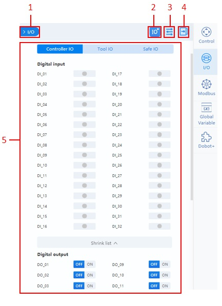
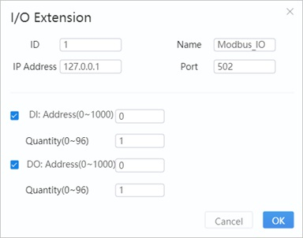
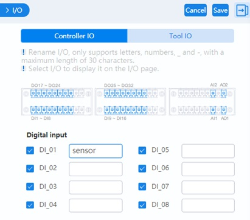
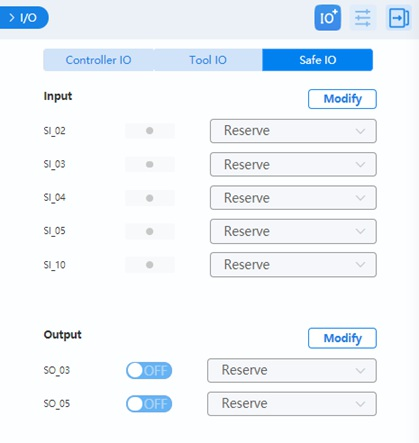

I/O Monitoring
I/O Panel Overview
You can monitor and set the I/O status of the controller and the end tool in this menu. For the I/O definition, refer to the IO description in the corresponding robot hardware guide. As different controllers vary in the number of I/O ports, the screenshots in this document are for reference only.
| No. | Description |
|---|---|
| 1 | Click to hide the panel. Click I/O in the right toolbar to display the panel. |
| 2 | Click to add extended I/O. This can be used for monitoring Modbus communication. See I/O extension for details. |
| 3 | Click to set an I/O alias or set the visibility of an I/O. See I/O configuration for details. |
| 4 | Click to fold the control panel. Click again to unfold the panel. |
| 5 | IO monitoring area. See Monitoring. |
I/O Extension
- ID: Slave device ID.
- Name: Name of the slave device.
- IP address: The IP address of the Modbus device.
- Port: Port number of Modbus communication.
- DI/DO: Configure the register address and number of DI/DO after selecting the function.
After clicking OK, a new I/O will appear in the bottom of I/O panel. This only takes effect only after the controller is restarted.
Click x on the top right of the tab will delete this extension.
I/O Configuration
- Select the I/O to display on the monitoring page.
- Enter the alias of the IO on the right side. The alias will be displayed on the monitoring page. You can also call the corresponding I/O through the alias in block programming and script programming.
- With a CCBOX-type controller, you can set digital input/output type to PNP (high-level active) or NPN (low-level active), as shown in the figure below.
Monitoring
Controller I/O and Tool I/O page supports the following functions.
- Output: Set the digital output or analog output.
- Monitor: Monitor the status of the input and output.
- Simulate: Simulate digital input status for debugging, as shown below.
You can set the functions of each safe I/O interface in the Safe I/O page. For details on the safe I/O, refer to the I/O description in the corresponding robot hardware guide.
With a CCBOX-type controller, safe I/O and universal I/O share the same terminal. The terminal configured as safe I/O cannot be configured as remote I/O.
